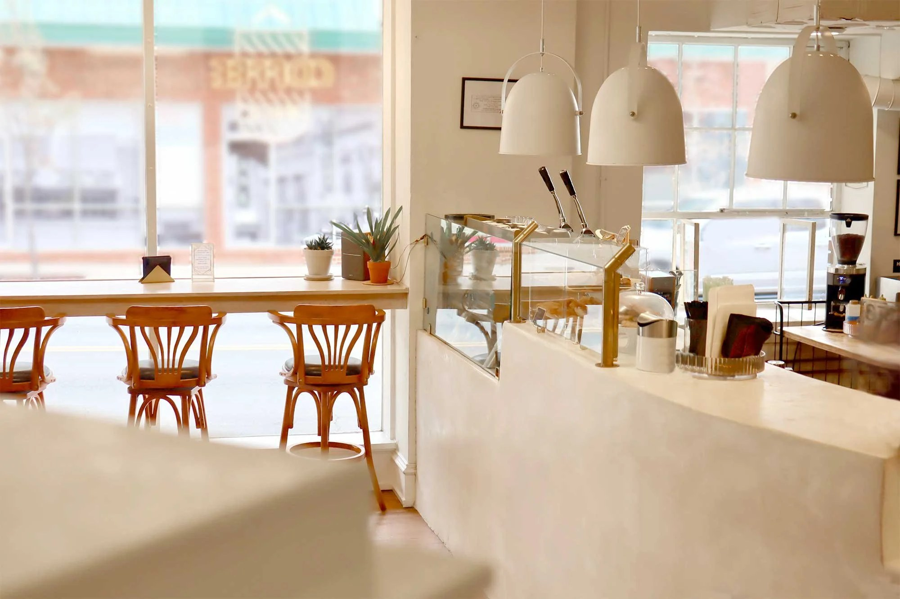
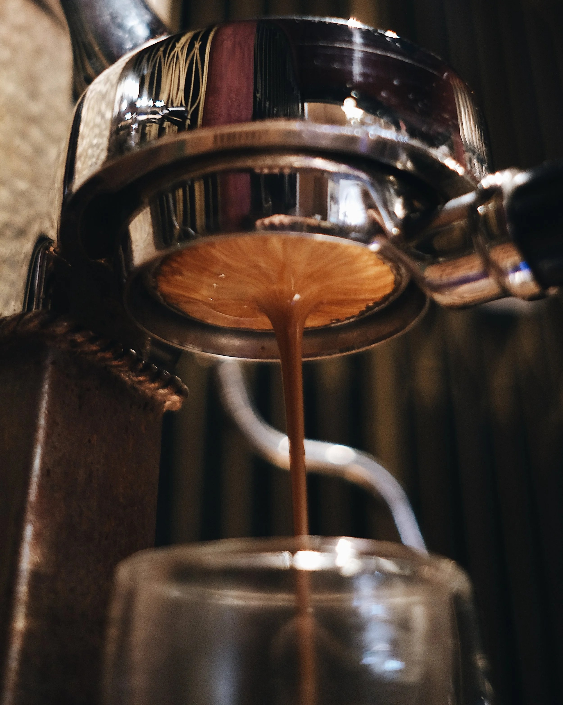
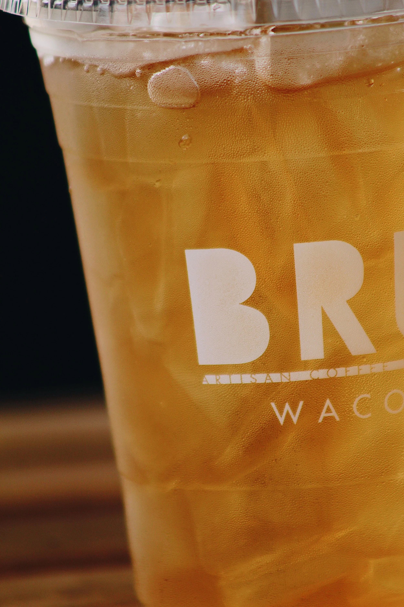

WACO, TX
BRÛ Artisan Coffee Works
A Waco cafe and roastery pouring fair-trade organic flame-roasted coffee at STORIES Cafe in downtown Waco.

About
BRU Artisan Coffee Works is a cafe and roastery now serving at STORIES Cafe, 800 Austin Ave in downtown Waco. The beans are fair-trade organic and flame-roasted, with origins in Uganda, Peru and Congo. The menu covers espresso, cold brew, pour-over, teas, lattes, pastries, scones and sandwiches.
Services
Fair-trade organic flame-roasted beans
Beans from Uganda, Peru and Congo, flame-roasted and sold as fair-trade organic.
Espresso
Cold brew
Pour-over
Lattes
Honey Vanilla and lavender lattes, honey cinnamon cappuccino, mocha, and a seasonal Pumpkin Praline.
Teas
Gallery


Gallery photos are photos of BRÛ Artisan Coffee Works from the business's own website.
Visit
Contact
BRÛ Artisan Coffee Works serves Waco, TX. Questions? Call +1 254-495-1640.